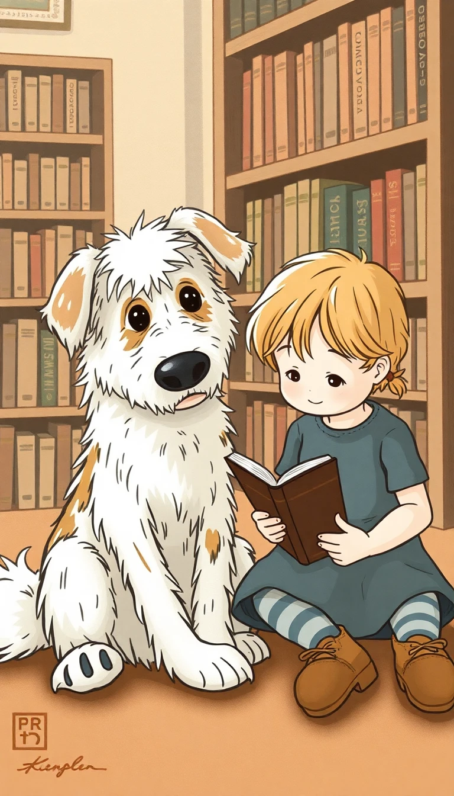

In a small town where the maple trees whispered secrets to the passing clouds, there lived a dog named Lucky. Lucky was not what most people would consider fortunate at first glance. His coat was patchy and scruffy, bearing the marks of difficult days gone by, and he moved with an uneven gait, having only three legs to carry him through the world.
Lucky had come to live with Mrs. Abernathy after she found him one rainy April morning, huddled beneath her porch steps. The veterinarian had said that Lucky's missing leg was an old injury, healed as well as it could have. "He's adjusted," the vet had explained. "Dogs don't worry about what they've lost. They simply make the most of what remains."
And make the most he did. Lucky possessed that special quality found only in certain souls—a boundless capacity for joy that seemed to overflow from his amber eyes.
Mrs. Abernathy worked at the Millfield Elementary School library, and one autumn day, when her usual sitter was ill, she brought Lucky with her. He lay quietly by her desk as she cataloged books, occasionally thumping his tail when a child would peek around the shelves to marvel at him.
It was young Timothy Morris who changed everything. Timothy, a second-grader with a mop of unruly brown hair and a reluctance to read aloud that no teacher had yet overcome, wandered into the library during recess. The other children were outside, but Timothy preferred the quiet company of books he couldn't quite master.
"Could I pet your dog, Mrs. Abernathy?" he asked softly.
"Of course," she replied. "His name is Lucky. Mind you go slowly—he's had a hard journey in life."
Timothy approached with care, and Lucky raised his head to meet the boy's tentative hand. Something passed between them in that moment—a recognition perhaps, of similar struggles faced.
"He's missing a leg," Timothy observed, not with pity but with simple acknowledgment.
"Yes," said Mrs. Abernathy. "But he doesn't seem to miss it much. He's found his own way of getting along."
Timothy sat cross-legged on the floor, and Lucky shifted to rest his head in the boy's lap. After a moment of consideration, Timothy pulled a thin book from his backpack.
"Do you think—" he hesitated, "do you think Lucky would mind if I read to him?"
Mrs. Abernathy felt a small catch in her throat. "I think he would like that very much."
And so Timothy began to read. He stumbled over words, paused to sound out difficult combinations, but Lucky remained attentive, his eyes never leaving the boy's face. When Timothy faltered, Lucky would nudge his hand gently, as if encouraging him to continue.
That afternoon marked the beginning of what would become known around Millfield as the "Reading with Lucky" program. Mrs. Abernathy noticed how children who balked at reading before their peers would happily curl up next to Lucky, who listened without judgment or correction.
Lucky had a particular talent for knowing which children needed him most. He would gravitate toward the shy ones, the ones with stutters or dyslexia, the ones who had been told too often to speak up or slow down.
The miracle was in watching confidence bloom. Timothy, who once hid in the library during recess, now led Lucky's reading sessions, explaining to new participants, "Lucky doesn't care if you mess up. He just likes the story and your voice."
Mrs. Abernathy would sometimes pause in her work to observe Lucky with his readers. She understood what the children perhaps did not—that in giving Lucky their trust, they were learning that imperfection didn't diminish worth. A missing leg, a stumbled word... these were merely variations in life's complex melody.
By winter's end, the waiting list for reading sessions with Lucky stretched two pages long, and Timothy had advanced nearly two grade levels in reading proficiency.
"It seems," the principal remarked to Mrs. Abernathy, "that your three-legged friend has four times the heart."
Mrs. Abernathy smiled. She knew what the children had discovered: that sometimes the most valuable lessons come from those who have faced life's difficulties and emerged with their capacity for love intact.
And Lucky? He continued to listen, to nudge, to simply be present. For in the quiet space of the library, surrounded by stories of adventure and courage, he had found his purpose—proving that what makes us different might also be what makes us necessary.